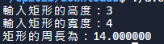
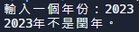
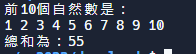
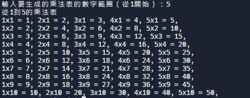
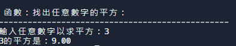
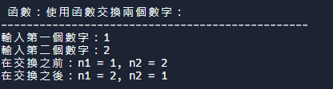

w7 <<
Previous Next >> Brython
ANSIC
1.
include <stdio.h>
float temp_f; /* 華氏度 */
float temp_c; /* 攝氏度 */
char line_text[50]; /* 一行輸入 */
int main() {
printf("輸入溫度（攝氏度）：");
if (fgets(line_text, sizeof(line_text), stdin) == NULL) {
// 處理錯誤（例如，打印錯誤消息或退出程序）。
fprintf(stderr, "讀取輸入時發生錯誤。\n");
return 1; // 返回非零值表示錯誤。
}
if (sscanf(line_text, "%f", &temp_c) != 1) {
// 處理錯誤（例如，打印錯誤消息或退出程序）。
fprintf(stderr, "將輸入轉換為浮點數時發生錯誤。\n");
return 1; // 返回非零值表示錯誤。
}
temp_f = ((9.0 / 5.0) * temp_c) + 32.0;
printf("%f 度華氏。\n", temp_f);
return 0;
}
2.
#include <stdio.h>
int main() {
float rec_width; /* 宣告變數 'rec_width' 以儲存矩形的寬度 */
float rec_height; /* 宣告變數 'rec_height' 以儲存矩形的高度 */
float rec_perimeter; /* 宣告變數 'rec_perimeter' 以儲存周長（將要計算的值） */
// 提示使用者輸入矩形的高度。
printf("輸入矩形的高度：");
int heightScanResult = scanf("%f", &rec_height); // 從使用者處讀取 'rec_height' 的值。
// 提示使用者輸入矩形的寬度。
printf("輸入矩形的寬度：");
int widthScanResult = scanf("%f", &rec_width); // 從使用者處讀取 'rec_width' 的值。
// 使用公式計算矩形的周長：周長 = 2 * (寬度 + 高度)
rec_perimeter = 2.0 * (rec_height + rec_width);
// 印出計算得到的矩形周長。
printf("矩形的周長為：%f\n", rec_perimeter);
return 0; // 表示程式執行成功。
}

3.
#include <stdio.h>
int main() {
int chk_year;
printf("輸入一個年份：");
if (scanf("%d", &chk_year) != 1) {
fprintf(stderr, "錯誤：輸入無效。請輸入有效的年份。\n");
return 1; // 表示錯誤
}
if ((chk_year % 400) == 0)
printf("%d年是閏年。\n", chk_year);
else if ((chk_year % 100) == 0)
printf("%d年不是閏年。\n", chk_year);
else if ((chk_year % 4) == 0)
printf("%d年是閏年。\n", chk_year);
else
printf("%d年不是閏年。\n", chk_year);
return 0; // 表示成功執行
}

4.
#include <stdio.h>
int main() {
int num1, rem1;
printf("輸入一個整數：");
// 使用 scanf 函數讀取整數，同時檢查返回值確保成功讀取
if (scanf("%d", &num1) != 1) {
fprintf(stderr, "錯誤：輸入無效。請輸入有效的整數。\n");
return 1; // 表示錯誤
}
// 計算整數除以2的餘數
rem1 = num1 % 2;
// 根據餘數判斷奇偶性並輸出結果
if (rem1 == 0)
printf("%d 是偶數。\n", num1);
else
printf("%d 是奇數。\n", num1);
return 0; // 表示成功執行
}
5.
#include <stdio.h>
int main() {
int j, sum = 0;
printf("前10個自然數是：\n");
for (j = 1; j <= 10; j++) {
sum = sum + j;
printf("%d ", j);
}
printf("\n總和為：%d\n", sum);
return 0;
}

6.
#include <stdio.h>
int main() {
int j, i, n;
printf("輸入要生成的乘法表的數字範圍（從1開始）：");
// 使用scanf函數讀取用戶輸入，同時檢查返回值確保成功讀取
if (scanf("%d", &n) != 1) {
fprintf(stderr, "錯誤：輸入無效。請輸入一個有效的數字。\n");
return 1; // 表示錯誤
}
printf("從1到%d的乘法表\n", n);
for (i = 1; i <= 10; i++) {
for (j = 1; j <= n; j++) {
printf("%dx%d = %d, ", j, i, i*j);
}
printf("\n");
}
return 0; // 表示成功執行
}

7.
#include <stdio.h>
// 函數：計算一個數字的平方
double square(double num) {
return (num * num);
}
int main() {
int num;
double n;
printf("\n\n 函數：找出任意數字的平方：\n");
printf("------------------------------------------------\n");
printf("輸入任意數字以求平方：");
// 使用scanf函數讀取用戶輸入，同時檢查返回值確保成功讀取
if (scanf("%d", &num) != 1) {
fprintf(stderr, "錯誤：輸入無效。請輸入一個有效的數字。\n");
return 1; // 表示錯誤
}
n = square(num);
printf("%d的平方是：%.2f\n", num, n);
return 0; // 表示成功執行
}

8.
#include<stdio.h>
// 函數：交換兩個數字
void swap(int *p, int *q) {
int tmp;
tmp = *p; // tmp儲存n1的值
*p = *q; // *p儲存*q的值，即n2的值
*q = tmp; // *q儲存tmp的值，即n1的值
}
int main() {
int n1, n2;
printf("\n\n 函數：使用函數交換兩個數字：\n");
printf("------------------------------------------------\n");
printf("輸入第一個數字：");
// 使用scanf函數讀取用戶輸入，同時檢查返回值確保成功讀取
if (scanf("%d", &n1) != 1) {
fprintf(stderr, "錯誤：輸入無效。請輸入一個有效的數字。\n");
return 1; // 表示錯誤
}
printf("輸入第二個數字：");
// 使用scanf函數讀取用戶輸入，同時檢查返回值確保成功讀取
if (scanf("%d", &n2) != 1) {
fprintf(stderr, "錯誤：輸入無效。請輸入一個有效的數字。\n");
return 1; // 表示錯誤
}
printf("在交換之前：n1 = %d, n2 = %d ", n1, n2);
// 將兩個變數的地址傳遞給函數。
swap(&n1, &n2);
printf("\n在交換之後：n1 = %d, n2 = %d \n\n", n1, n2);
return 0;
}

9.
#include <time.h>
#include <stdio.h>
#include <stdlib.h>
int main(void)
{
time_t cur_time; // 定義時間變數
char* cur_t_string; // 定義時間字串指標
cur_time = time(NULL); // 獲取當前時間
if (cur_time == ((time_t)-1))
{
(void) fprintf(stderr, "無法獲取當前日期和時間。\n");
exit(EXIT_FAILURE);
}
cur_t_string = ctime(&cur_time); // 將時間轉換為本地時間格式
if (cur_t_string == NULL)
{
(void) fprintf(stderr, "無法轉換當前日期和時間。\n");
exit(EXIT_FAILURE);
}
(void) printf("\n 現在的時間是：%s \n", cur_t_string);
exit(EXIT_SUCCESS);
}
10.
#include <stdio.h>
#include <time.h>
int main(void)
{
time_t now;
time(&now); // 獲取當前時間
struct tm beg_month;
beg_month = *localtime(&now); // 獲取本地時間結構體
beg_month.tm_hour = 0; // 將小時、分鐘、秒設置為0
beg_month.tm_min = 0;
beg_month.tm_sec = 0;
beg_month.tm_mday = 1; // 將日設置為1，即本月初
double seconds = difftime(now, mktime(&beg_month)); // 計算兩個時間之間的秒數差
printf("\n 距離本月初已經過了 %.f 秒。\n\n", seconds);
return 0;
}
w7 <<
Previous Next >> Brython